Code
patt <- c("t2min_atStation_corrected", "t2max_atStation_corrected", "t2min_atStation_original", "t2max_atStation_original")
summ <- c("min", "max", "min", "max")
type <- c("corrected", "corrected", "original", "original")
mylist <- list()Purpose: Generate future seasonal mean air temperature projections from GCM data (Rahimi et al. 2024, Geoscientific Model Development)
Some misc. objects
patt <- c("t2min_atStation_corrected", "t2max_atStation_corrected", "t2min_atStation_original", "t2max_atStation_original")
summ <- c("min", "max", "min", "max")
type <- c("corrected", "corrected", "original", "original")
mylist <- list()Pull in climate projection data
for(i in 1:length(patt)) {
myfiles <- list.files("Data/GCM Archive", pattern = patt[i], full.names = TRUE)
dat <- read_csv(myfiles, id = "file_name")[,c(1,2,5)] %>% mutate(summ = summ[i], type = type[i], gcm = str_match(file_name, "Archive/\\s*(.*?)\\s*_t2")[,2])
dat <- dat %>% select(6,4,5,2,3) %>% rename(date = 4, temp = 5)
mylist[[i]] <- dat
#print(i)
}
dat <- do.call(rbind, mylist)
summary(dat) gcm summ type date
Length:2604648 Length:2604648 Length:2604648 Min. :1980-10-01
Class :character Class :character Class :character 1st Qu.:2010-07-01
Mode :character Mode :character Mode :character Median :2040-04-01
Mean :2040-03-31
3rd Qu.:2069-12-31
Max. :2099-09-30
NA's :836
temp
Min. :217.5
1st Qu.:269.5
Median :276.6
Mean :277.9
3rd Qu.:286.6
Max. :315.6
head(dat)# A tibble: 6 × 5
gcm summ type date temp
<chr> <chr> <chr> <date> <dbl>
1 access-cm2_r5i1p1f1 min corrected 1980-10-01 268.
2 access-cm2_r5i1p1f1 min corrected 1980-10-02 257.
3 access-cm2_r5i1p1f1 min corrected 1980-10-03 253.
4 access-cm2_r5i1p1f1 min corrected 1980-10-04 260.
5 access-cm2_r5i1p1f1 min corrected 1980-10-05 267.
6 access-cm2_r5i1p1f1 min corrected 1980-10-06 271.Notes:
view(dat %>% group_by(gcm, summ, type) %>% summarise(mind = min(date, na.rm = T), maxd = max(date, na.rm = T), n = n()))Some GCMs do not predict for Feb 29 (leap years)…drop NAs
dat <- dat %>% filter(!is.na(date))Find daily mean temp for each climate model
dat2 <- dat %>% group_by(gcm, type, date) %>% summarize(temp_mean = mean(temp)-273.15) %>% ungroup()
dat2 %>% group_by(gcm) %>% summarise(mind = min(date), maxd = max(date), n = n())# A tibble: 15 × 4
gcm mind maxd n
<chr> <date> <date> <int>
1 access-cm2_r5i1p1f1 1980-10-01 2099-09-30 86928
2 canesm5_r1i1p2f1 1980-10-01 2099-09-30 86870
3 cesm2_r11i1p1f1 1980-10-01 2099-09-30 86870
4 cnrm-esm2-1_r1i1p1f2 1980-10-01 2099-09-30 86928
5 ec-earth3-veg_r1i1p1f1 1980-10-01 2099-09-30 86928
6 ec-earth3_r1i1p1f1 1980-10-01 2099-09-30 86928
7 fgoals-g3_r1i1p1f1 1980-10-01 2099-09-30 86870
8 giss-e2-1-g_r1i1p1f2 1980-10-01 2099-09-30 86870
9 miroc6_r1i1p1f1 1980-10-01 2099-09-30 86928
10 mpi-esm1-2-hr_r3i1p1f1 1980-10-01 2099-09-30 86928
11 mpi-esm1-2-hr_r7i1p1f1 1980-10-01 2099-09-30 86928
12 mpi-esm1-2-lr_r7i1p1f1 1980-10-01 2099-09-30 86928
13 noresm2-mm_r1i1p1f1 1980-10-01 2099-09-30 86870
14 taiesm1_r1i1p1f1 1980-10-01 2099-09-30 86870
15 ukesm1-0-ll_r2i1p1f2 1980-10-01 2099-09-30 85262#sum(is.na(dat2$temp_mean))Group by year, plot time series of annual means.
dat2 %>% mutate(year = year(date)) %>% group_by(gcm, year) %>% summarize(ann_temp = mean(temp_mean)) %>% ggplot() + geom_line(aes(x = year, y = ann_temp, group = gcm, colour = gcm))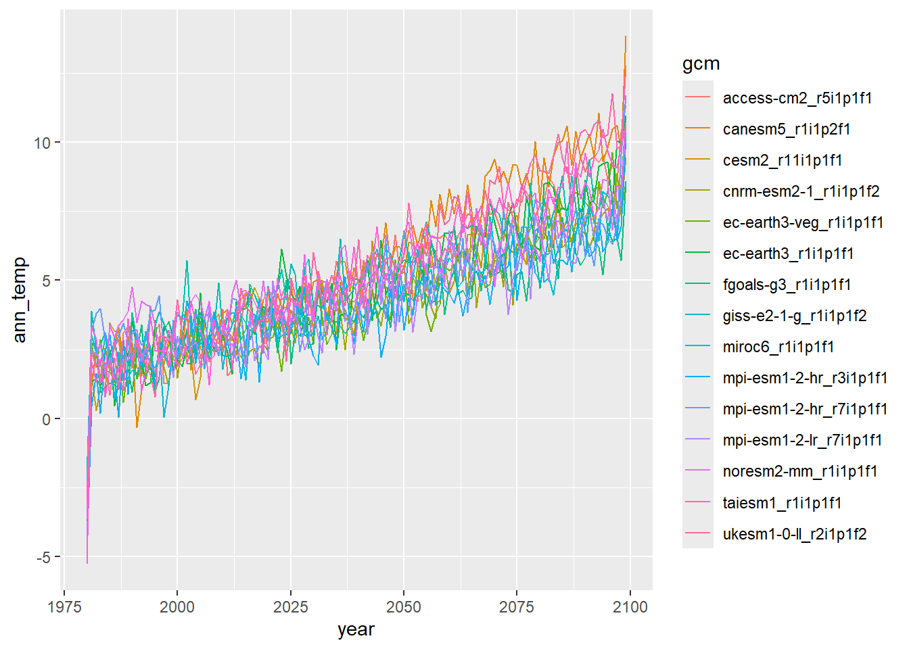
View corrected daily (mean) air temp for a single year (1981)
dat2 %>% filter(date >= "1981-01-01" & date <= "1981-12-31", type == "corrected") %>% ggplot() + geom_line(aes(x = date, y = temp_mean, group = gcm, colour = gcm))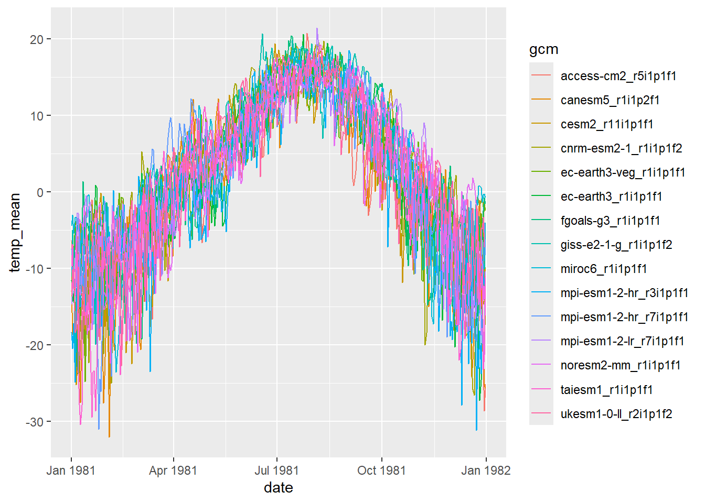
Summarize GCM data across four seasons
dat2 <- dat2 %>% mutate(season = ifelse(month(date) %in% c(9,10,11), "fal",
ifelse(month(date) %in% c(12,1,2), "win",
ifelse(month(date) %in% c(3,4,5), "spr", "sum"))))
dat3 <- dat2 %>% group_by(gcm, type, season, year(date)) %>% summarize(temp_mean = mean(temp_mean)) %>% rename(year = 4)Plot time series of seasonal mean air temperature:
dat3 %>% ggplot() + geom_line(aes(x = year, y = temp_mean, group = gcm, colour = gcm)) + facet_wrap(~season)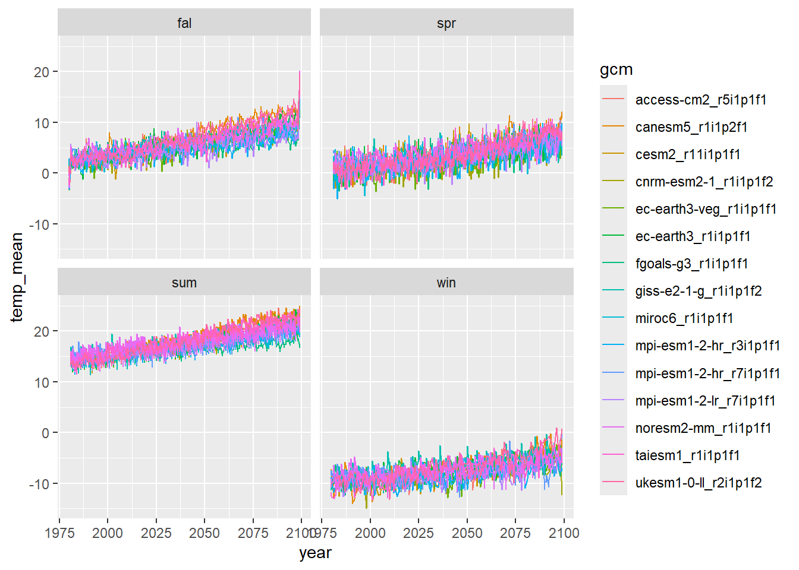
Summarize seasonal mean air temperature across 15 GCMs
dat_summ <- dat3 %>% group_by(type, season, year) %>% summarize(count = n(), temp_avg = mean(temp_mean, na.rm = T), temp_sd = sd(temp_mean, na.rm = T), temp_min = min(temp_mean, na.rm = T), temp_max = max(temp_mean, na.rm = T)) %>% ungroup()Plot raw and corrected output: mean min and max
dat_summ %>% ggplot() + geom_line(aes(x = year, y = temp_avg)) + geom_line(aes(x = year, y = temp_min), color = 4) + geom_line(aes(x = year, y = temp_max), color = 2) + facet_wrap(~season + type)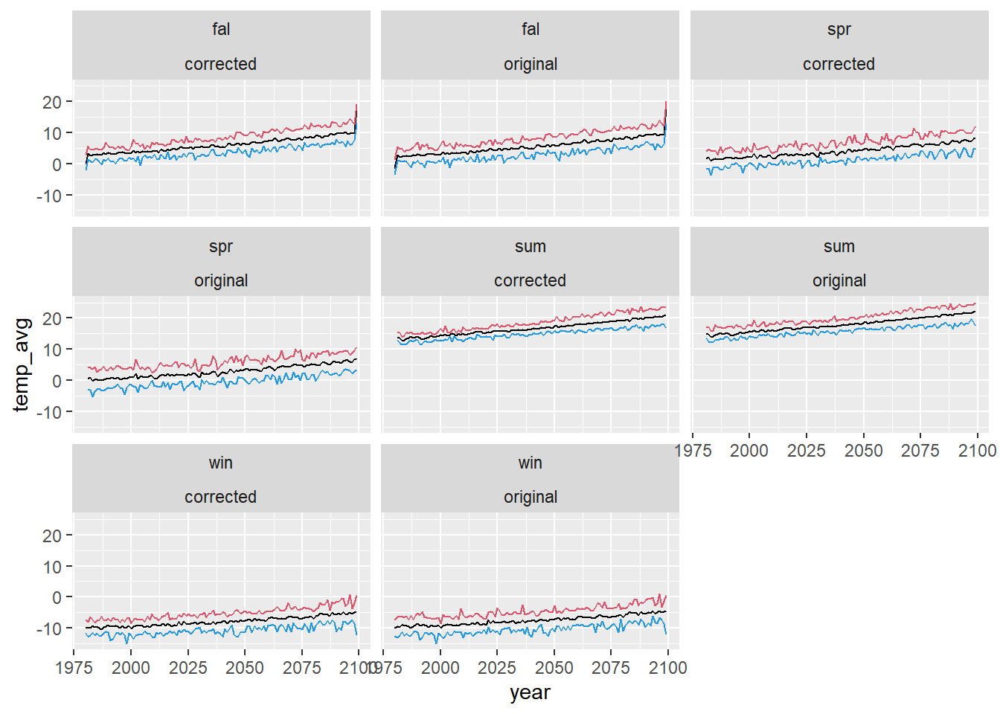
View winter corrected only:
dat_summ %>% filter(season == "win", type == "corrected") %>% ggplot() + geom_line(aes(x = year, y = temp_avg)) + geom_line(aes(x = year, y = temp_min), linetype = 2) + geom_line(aes(x = year, y = temp_max), linetype = 2) 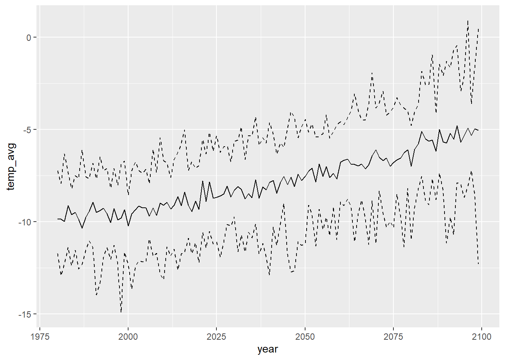
write_csv(dat3, "Data/Derived/SeasonalMeanAirTemp_byGCM_1980-2099.csv")
write_csv(dat_summ, "Data/Derived/SeasonalMeanAirTemp_Summarized_1980-2099.csv")dat3 <- read_csv("Data/Derived/SeasonalMeanAirTemp_byGCM_1980-2099.csv")
dat_summ <- read_csv("Data/Derived/SeasonalMeanAirTemp_Summarized_1980-2099.csv")Load NWS air temperature data from Moose, WY
airsum <- read_csv("Data/Derived/AirTemperature_Covariates_BroodYear_1960-2022.csv")Compare observed data with projections from individual GCMs
ggplot() +
geom_line(data = dat3 %>% filter(season == "fal"), aes(x = year, y = temp_mean, group = gcm, colour = gcm)) +
geom_line(data = airsum %>% filter(site == "moose"), aes(x = broodyr, y = temp_falmean), size = 1.2) + xlim(1960,2100) +
facet_wrap(~ type, ncol = 2) + theme(legend.position = "none")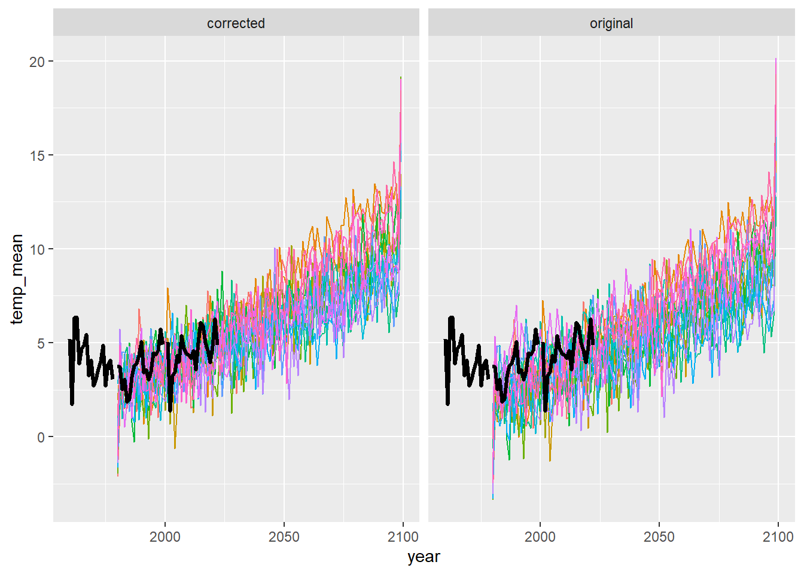
ggplot() +
geom_line(data = dat3 %>% filter(season == "win"), aes(x = year, y = temp_mean, group = gcm, colour = gcm)) +
geom_line(data = airsum %>% filter(site == "moose"), aes(x = broodyr, y = temp_winmean), size = 1.2) + xlim(1960,2100) +
facet_wrap(~ type, ncol = 2) + theme(legend.position = "none")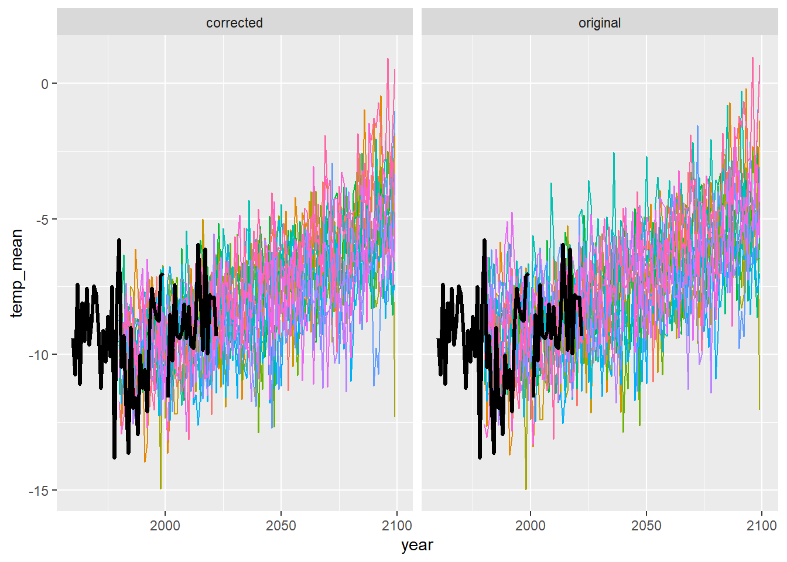
ggplot() +
geom_line(data = dat3 %>% filter(season == "spr"), aes(x = year, y = temp_mean, group = gcm, colour = gcm)) +
geom_line(data = airsum %>% filter(site == "moose"), aes(x = broodyr, y = temp_sprmean), size = 1.2) + xlim(1960,2100) +
facet_wrap(~ type, ncol = 2) + theme(legend.position = "none")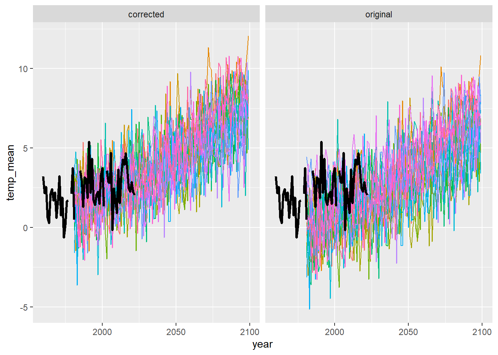
ggplot() +
geom_line(data = dat3 %>% filter(season == "sum"), aes(x = year, y = temp_mean, group = gcm, colour = gcm)) +
geom_line(data = airsum %>% filter(site == "moose"), aes(x = broodyr, y = temp_summean), size = 1.2) + xlim(1960,2100) +
facet_wrap(~ type, ncol = 2) + theme(legend.position = "none")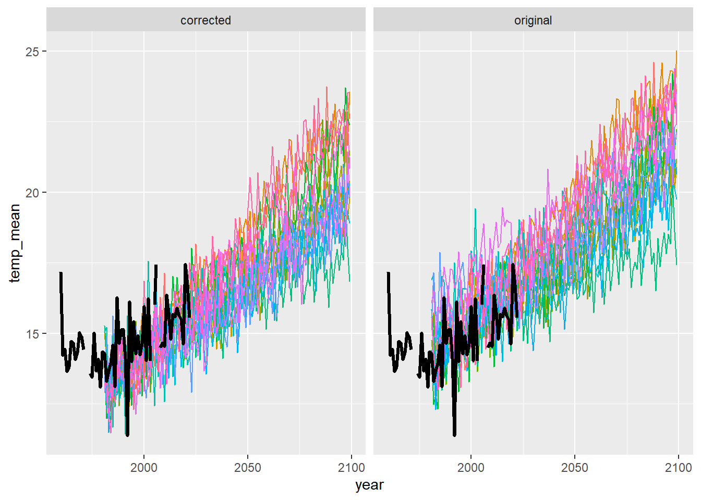
Compare observed data with projections summarized across all GCMs
ggplot() +
geom_line(data = dat_summ %>% filter(season == "fal"), aes(x = year, y = temp_avg)) +
geom_line(data = dat_summ %>% filter(season == "fal"), aes(x = year, y = temp_min), color = 4) +
geom_line(data = dat_summ %>% filter(season == "fal"), aes(x = year, y = temp_max), color = 2) +
geom_line(data = airsum %>% filter(site == "moose"), aes(x = broodyr, y = temp_falmean), size = 1.2) + xlim(1960,2100) +
facet_wrap(~ type, ncol = 2) + theme(legend.position = "none")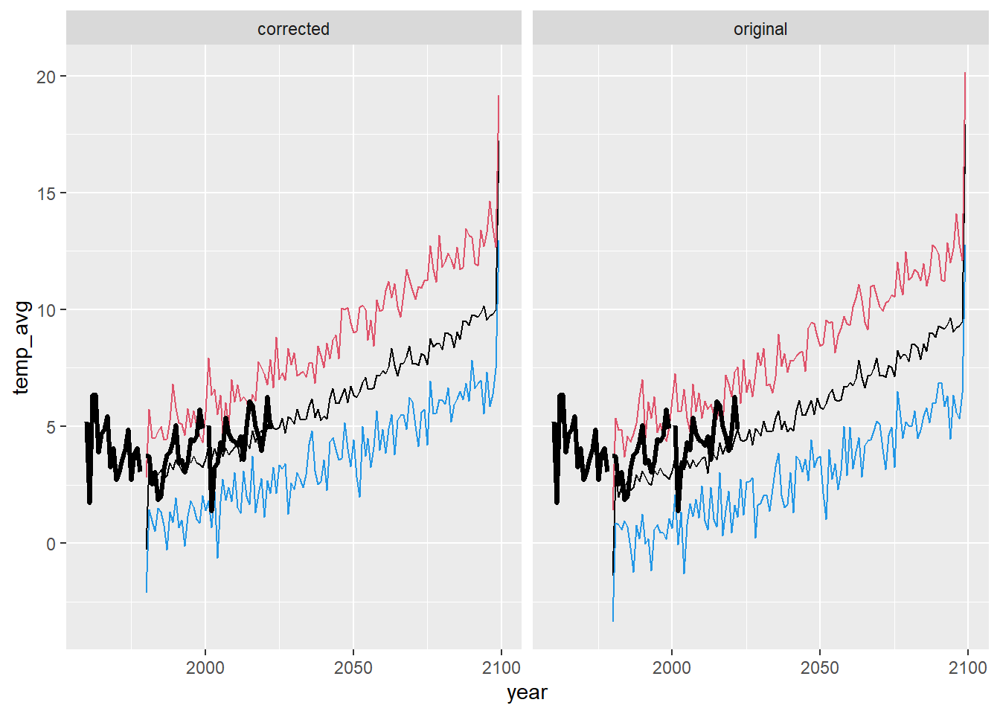
ggplot() +
geom_line(data = dat_summ %>% filter(season == "win"), aes(x = year, y = temp_avg)) +
geom_line(data = dat_summ %>% filter(season == "win"), aes(x = year, y = temp_min), color = 4) +
geom_line(data = dat_summ %>% filter(season == "win"), aes(x = year, y = temp_max), color = 2) +
geom_line(data = airsum %>% filter(site == "moose"), aes(x = broodyr, y = temp_winmean), size = 1.2) + xlim(1960,2100) +
facet_wrap(~ type, ncol = 2) + theme(legend.position = "none")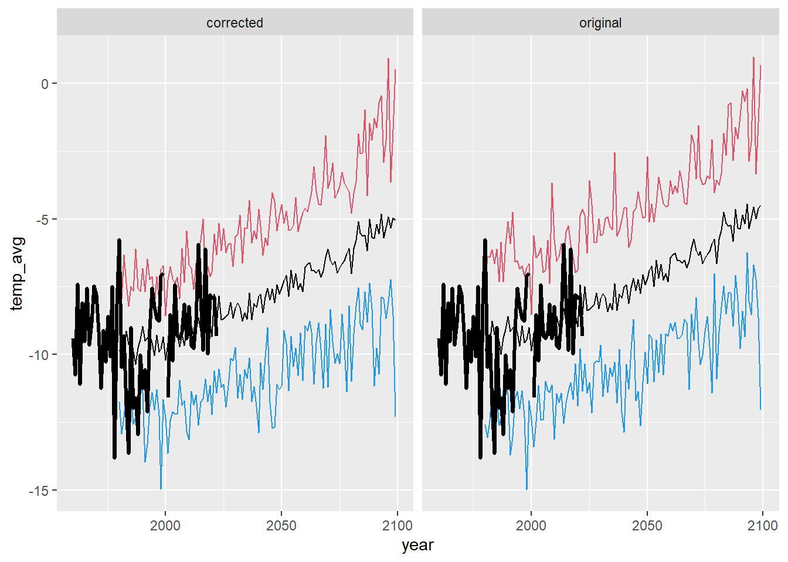
ggplot() +
geom_line(data = dat_summ %>% filter(season == "spr"), aes(x = year, y = temp_avg)) +
geom_line(data = dat_summ %>% filter(season == "spr"), aes(x = year, y = temp_min), color = 4) +
geom_line(data = dat_summ %>% filter(season == "spr"), aes(x = year, y = temp_max), color = 2) +
geom_line(data = airsum %>% filter(site == "moose"), aes(x = broodyr, y = temp_sprmean), size = 1.2) + xlim(1960,2100) +
facet_wrap(~ type, ncol = 2) + theme(legend.position = "none")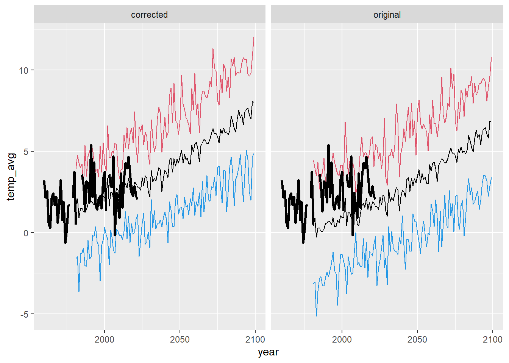
ggplot() +
geom_line(data = dat_summ %>% filter(season == "sum"), aes(x = year, y = temp_avg)) +
geom_line(data = dat_summ %>% filter(season == "sum"), aes(x = year, y = temp_min), color = 4) +
geom_line(data = dat_summ %>% filter(season == "sum"), aes(x = year, y = temp_max), color = 2) +
geom_line(data = airsum %>% filter(site == "moose"), aes(x = broodyr, y = temp_summean), size = 1.2) + xlim(1960,2100) +
facet_wrap(~ type, ncol = 2) + theme(legend.position = "none")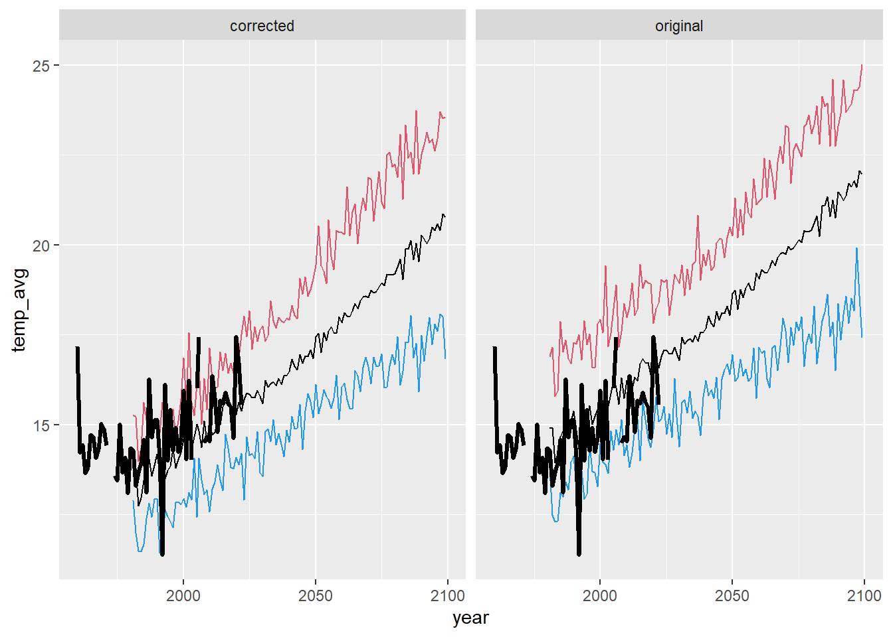
Combined plot for supplementary file
When will projected seasonal means consistently exceed observed data (w/in the time frame of redd count monitoring)?
maxobs <- airsum %>% filter(site == "moose", broodyr %in% c(1980:2015)) %>% group_by(site) %>% summarise(maxfal = max(temp_falmean, na.rm = T), maxwin = max(temp_winmean, na.rm = T), maxspr = max(temp_sprmean, na.rm = T), maxsum = max(temp_summean, na.rm = T))
dat_summ %>% filter(type == "corrected", season == "fal", temp_avg >= c(maxobs[1,2])) # 2045-2050# A tibble: 56 × 8
type season year count temp_avg temp_sd temp_min temp_max
<chr> <chr> <dbl> <dbl> <dbl> <dbl> <dbl> <dbl>
1 corrected fal 2036 15 6.18 0.994 4.82 7.75
2 corrected fal 2042 15 6.21 1.11 4.34 7.88
3 corrected fal 2043 15 6.62 1.23 4.51 8.71
4 corrected fal 2046 15 6.29 1.62 3.64 10.1
5 corrected fal 2047 15 6.63 1.24 5.16 10.0
6 corrected fal 2049 15 6.71 1.54 3.29 9.42
7 corrected fal 2050 15 6.34 1.31 4.42 9.01
8 corrected fal 2051 15 6.25 1.85 2.83 9.07
9 corrected fal 2052 15 6.50 1.81 1.99 10.1
10 corrected fal 2053 15 6.88 1.32 4.98 10.2
# ℹ 46 more rowsdat_summ %>% filter(type == "corrected", season == "win", temp_avg >= c(maxobs[1,3])) # 2083# A tibble: 16 × 8
type season year count temp_avg temp_sd temp_min temp_max
<chr> <chr> <dbl> <dbl> <dbl> <dbl> <dbl> <dbl>
1 corrected win 2083 15 -5.10 1.62 -7.54 -1.86
2 corrected win 2084 15 -5.52 1.92 -8.86 -2.59
3 corrected win 2085 15 -5.63 1.84 -9.09 -2.57
4 corrected win 2086 15 -5.58 2.06 -7.68 -0.963
5 corrected win 2088 15 -5.00 1.71 -7.36 -1.47
6 corrected win 2089 15 -5.68 1.77 -8.32 -2.08
7 corrected win 2090 15 -5.73 2.53 -11.2 -1.29
8 corrected win 2091 15 -5.20 2.25 -9.76 -1.64
9 corrected win 2092 15 -5.54 2.28 -10.7 -0.699
10 corrected win 2093 15 -4.81 2.05 -7.88 -0.445
11 corrected win 2094 15 -5.70 1.47 -7.95 -2.92
12 corrected win 2095 15 -5.34 1.99 -8.69 -2.11
13 corrected win 2096 15 -4.91 2.21 -8.06 0.928
14 corrected win 2097 15 -5.34 1.38 -7.22 -3.64
15 corrected win 2098 15 -4.97 2.30 -8.54 -1.71
16 corrected win 2099 15 -5.05 2.97 -12.3 0.517dat_summ %>% filter(type == "corrected", season == "spr", temp_avg >= c(maxobs[1,4])) # 2065# A tibble: 37 × 8
type season year count temp_avg temp_sd temp_min temp_max
<chr> <chr> <dbl> <dbl> <dbl> <dbl> <dbl> <dbl>
1 corrected spr 2060 15 5.45 2.16 1.08 9.80
2 corrected spr 2061 15 5.55 1.28 1.89 7.24
3 corrected spr 2065 15 5.54 1.47 3.15 8.73
4 corrected spr 2066 15 5.76 2.03 1.27 8.69
5 corrected spr 2067 15 5.66 1.67 2.06 8.41
6 corrected spr 2068 15 5.47 1.46 3.52 8.27
7 corrected spr 2069 15 5.52 1.90 2.03 8.60
8 corrected spr 2070 15 5.76 1.93 1.93 9.33
9 corrected spr 2071 15 6.12 1.84 2.84 8.98
10 corrected spr 2072 15 6.40 2.12 2.76 11.3
# ℹ 27 more rowsdat_summ %>% filter(type == "corrected", season == "sum", temp_avg >= c(maxobs[1,5])) # 2050-2055# A tibble: 48 × 8
type season year count temp_avg temp_sd temp_min temp_max
<chr> <chr> <dbl> <dbl> <dbl> <dbl> <dbl> <dbl>
1 corrected sum 2050 15 17.4 0.891 16.1 19.4
2 corrected sum 2051 15 17.5 1.48 15.3 20.5
3 corrected sum 2053 15 17.6 0.926 16.0 19.3
4 corrected sum 2055 15 17.6 1.37 15.7 20.7
5 corrected sum 2056 15 17.7 1.17 15.5 19.7
6 corrected sum 2057 15 17.6 1.06 15.7 19.3
7 corrected sum 2058 15 17.5 1.27 16.4 20.4
8 corrected sum 2059 15 18.0 1.23 15.1 20.3
9 corrected sum 2060 15 17.8 1.33 16.0 20.4
10 corrected sum 2061 15 18.1 1.13 16.2 20.3
# ℹ 38 more rows